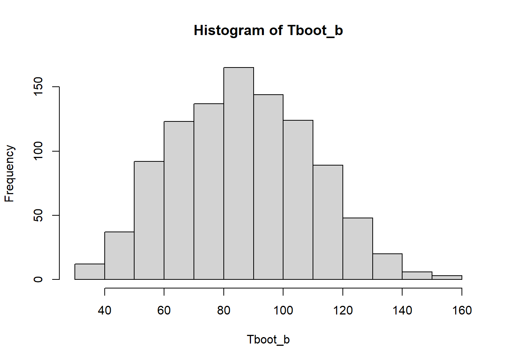
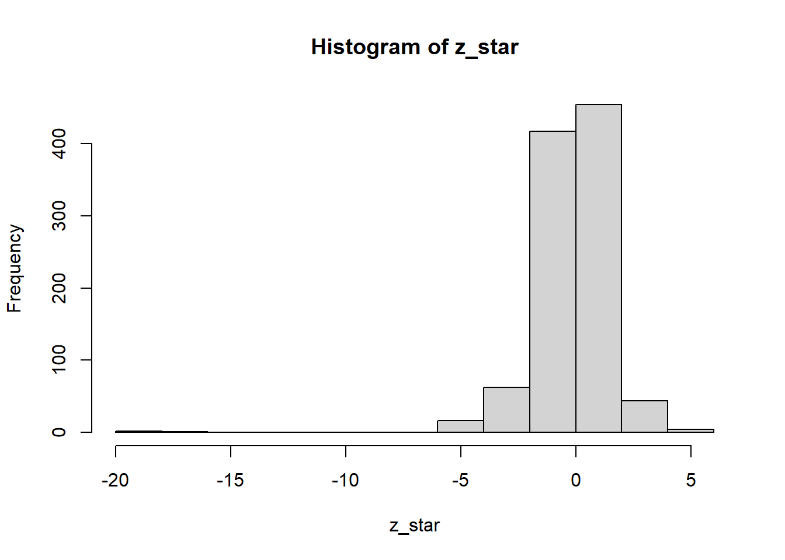
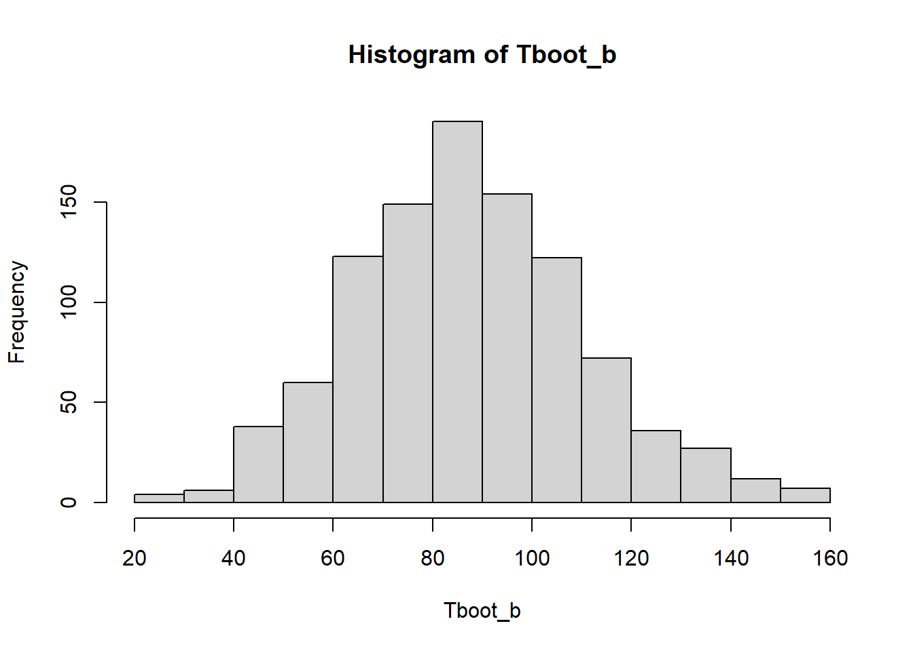
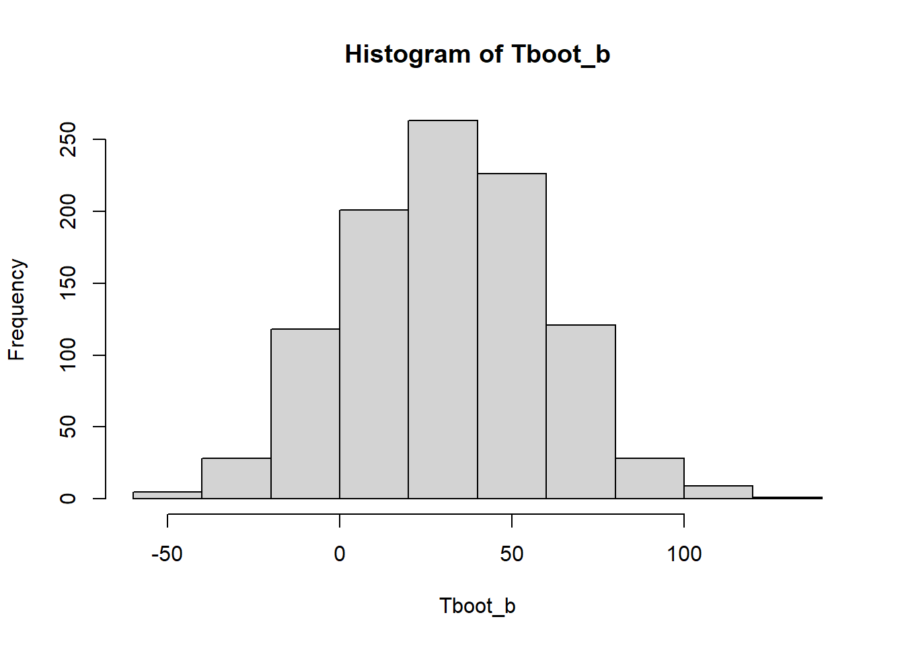

X<-c(94,197,16,38,99,141,23)
Y<-c(52,104,146,10,51,30,40,27,46)lab05a: Bootstrap
Este documento ilustra el uso de Bootstrap.
Se tienen datos de sobrevivencia de 16 ratones luego de una cirugía de prueba: 9 ratones en el grupo control y 7 ratones en el grupo de tratamiento.
| Grupo | Tiempo de sovrevivencia(días) | Media |
|---|---|---|
| Tratamiento | 94,197,16,38,99,141,23 | 86.86 |
| Control | 52,104,146,10,51,30,40,27,46 | 56.22 |
¿Podemos decir que el tratamiento es efectivo?
En estadística, resolvemos esa pregunta estimando \(\bar{X}- \bar{Y} = 30.63\). El problema es cómo calcular la variabilidad, ¿podemos suponer lo mismo de siempre?
1 Datos
2 Estimación de \(\bar{X}\).
2.1 Estimación por intervalo del tiempo promedio de sobrevivencia del tratamiento.
(estimacion<-mean(X))[1] 86.85714sd(X)[1] 66.76683n<-length(X)Asumiendo normalidad de la población, tenemos que el intervalo de confianza de 95% es dado por:
estimacion+c(-1,1)*qt(p=0.975,df=(n-1))*sd(X)/sqrt(n)[1] 25.10812 148.606162.2 IC estándar de Bootstrap
B <- 1000
Tboot_b <- NULL
for(b in 1:B) {
xb <- sample(X, size = n, replace = TRUE)
Tboot_b[b] <- mean(xb)
}
Tboot_b[1:10] [1] 91.71429 90.71429 41.42857 50.85714 96.71429 128.14286 77.85714
[8] 57.14286 62.00000 51.14286hist(Tboot_b)
2.2.1 Sesgo del bootstrap
(media_bootstrap <- mean(Tboot_b))[1] 86.75514estimacion[1] 86.85714(sesgo_bootstrap <- media_bootstrap-estimacion)[1] -0.1022.2.2 Intervalos de confianza de 95%
(cuantil_z <- qnorm(1 - 0.05 / 2))[1] 1.959964(sdboot <- sd(Tboot_b))[1] 23.07749estimacion + c(-1,1)*cuantil_z * sdboot[1] 41.6261 132.08822.2.3 IC bootstrap t
B <- 1000
Tboot_b <- NULL
Tboot_bm <- NULL
sdboot_b <- NULL
for (b in 1:B) {
xb <- sample(X, size = n, replace = TRUE)
Tboot_b[b] <- mean(xb)
for (m in 1:B) {
xbm <- sample(xb, size = n, replace = TRUE)
Tboot_bm[m] <- mean(xbm)
}
sdboot_b[b] <- sd(Tboot_bm)
}
z_star <- (Tboot_b - estimacion) / sdboot_b
hist(z_star)
summary(z_star) Min. 1st Qu. Median Mean 3rd Qu. Max.
-17.76545 -0.84154 -0.04854 -0.17085 0.61299 6.21088 cuantil_t_empirico <- quantile(z_star, c(0.05/2, 1-0.05/2))
estimacion +cuantil_t_empirico* sdboot 2.5% 97.5%
13.0147 135.2669 2.2.4 IC percentil de bootstrap
B <- 1000
Tboot_b <- NULL
for(b in 1:B) {
xb <- sample(X, size = n, replace = TRUE)
Tboot_b[b] <- mean(xb)
}
hist(Tboot_b)
quantile(Tboot_b,0.05 / 2) 2.5%
42.98571 quantile(Tboot_b, 1 - 0.05 / 2) 97.5%
138.2857 2.2.5 Con el paquete boots de R.
library(boot)
mean_fun=function(datos,indice){
m=mean(datos[indice])
v=var(datos[indice])
c(m,v)
}
X.boot<-boot(X,mean_fun,R=1000)
(results<-boot.ci(X.boot,type=c("basic","stud","perc")))BOOTSTRAP CONFIDENCE INTERVAL CALCULATIONS
Based on 1000 bootstrap replicates
CALL :
boot.ci(boot.out = X.boot, type = c("basic", "stud", "perc"))
Intervals :
Level Basic Studentized Percentile
95% ( 37.45, 132.56 ) ( 28.90, 164.90 ) ( 41.15, 136.27 )
Calculations and Intervals on Original Scale3 Estimación de \(\bar{X}\) - \(\bar{Y}\).
3.1 Ilustración a mano
(estimacion<-mean(X)-mean(Y))[1] 30.63492n<-length(X)
m<-length(Y)
B <- 1000
Tboot_b <- NULL
for(b in 1:B) {
xb <- sample(X, size = n, replace = TRUE)
yb <- sample(Y, size = m, replace = TRUE)
Tboot_b[b] <- mean(xb)-mean(yb)
}
Tboot_b[1:10] [1] 40.761905 17.000000 50.015873 41.412698 49.523810 -6.365079 56.460317
[8] 1.111111 39.079365 -3.222222hist(Tboot_b)
(cuantil_z <- qnorm(1 - 0.05 / 2))[1] 1.959964(sdboot <- sd(Tboot_b))[1] 28.51109estimacion + c(-1,1)*cuantil_z * sdboot[1] -25.24579 86.515633.2 Con el paquete simpleboot
library(simpleboot)Simple Bootstrap Routines (1.1-8)bootstrap_diff <- two.boot(X, Y, mean, R = 1000, student = TRUE, M = 1000)
(bootstrap_diff_res<-boot.ci(bootstrap_diff,type=c("basic","stud","perc")))BOOTSTRAP CONFIDENCE INTERVAL CALCULATIONS
Based on 1000 bootstrap replicates
CALL :
boot.ci(boot.out = bootstrap_diff, type = c("basic", "stud",
"perc"))
Intervals :
Level Basic Studentized Percentile
95% (-20.37, 83.27 ) (-25.61, 102.10 ) (-22.00, 81.64 )
Calculations and Intervals on Original Scale